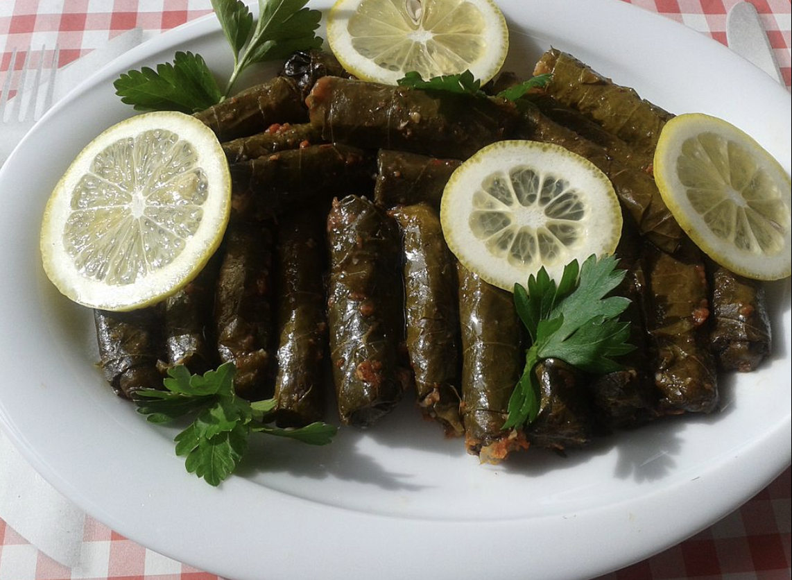

Grape leaves originated in the Middle East where rice and meat is placed in grape leaves which are then wrapped creating an absolutely delicious meal
We're using jarred grape leaves in brine, no cooking needed. But before using in this recipe, remove them from the jar and rinse well. Let them drain in a colander while you prepare the stuffing.
The stuffing here is made of rice, cooked ground beef, and a few chopped fresh herbs (parsley, dill, and mint).
First, rinse the rice and soak in water for 20 minutes (this is an important step, read on for more tips.) Then drain well. And while the rice is soaking cook the meat. Sautee finely chopped onions, add the meat and cook until fully browned. Be sure to drain any excess fat, then season the meat with kosher salt and pepper, allspice and cumin (so tasty!) Let cool. Combine the meat, rice, and fresh herbs. Add a generous drizzle of extra virgin olive oil and toss to combine. Add pinch of salt.
Lightly oil the pot with some extra virgin olive oil, then add a few layers of grape leaves and top with sliced tomatoes. This protects the stuffed grape leaves touching the bottom of the pot from scorching. To stuff grape leaves, work one leaf at a time. Lay the leaf flat on a cutting board with the more textured side facing you. Cut off the stem. Take a heaping teaspoon of the rice stuffing mixture (a little bit less than 1 tablespoon) and place in the center of the leaf (close to where stem was). Fold the sides over the filling and roll, keep tucking the left and right sides as you roll Fold and roll grape leaves tightly enough but not too tight so the rice has room to expand as it cooks.
Neatly arrange the grape leaves in rows, seam-side down, in your prepared pot, covering the circumference of the pot. Then place a small plate inverted on top (this helps keep them in place while cooking.) Boil the water or broth and pour over the grape leaves, arriving at the top layer and somewhat covering (about 4 cups liquid, maybe a little more.)
Cover the pot with its lid and cook over medium heat for 30 minutes until the liquid has been absorbed. Uncover and remove the plate, then pour juice of 2 lemons. Cover again with the lid (no need for the plate at this point), cook on low heat for 30 to 45 more minutes or until fully cooked.Let rest for 20 to 30 minutes, uncovered, before transferring to serving platter.